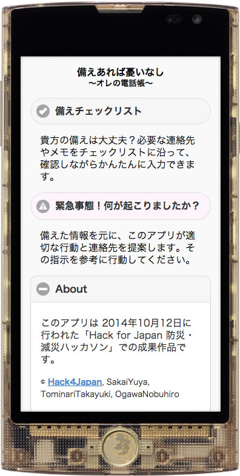
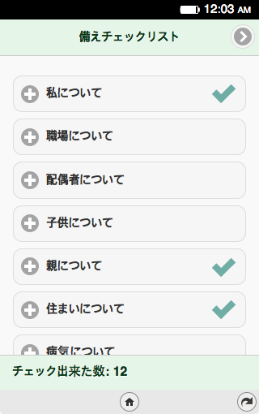
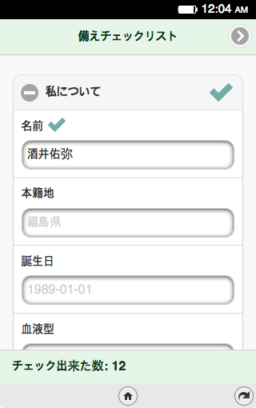
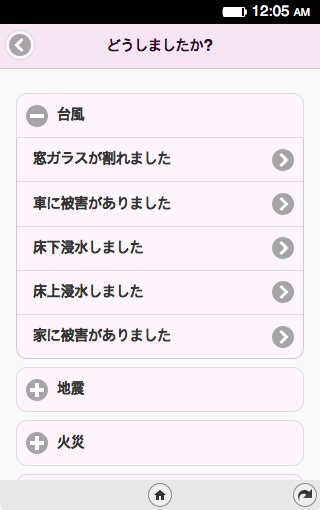

Prototype Demo
※現段階では個人情報保護は特に行っていません。
シナリオ・アンケート
「いざという時」に提案するシナリオに関して、実際に体験された内容などを盛り込みたく、アンケートを行っております。ぜひご協力ください。
Github
JavaScript (jQuery Mobile) Ver.
PHP Ver.
今春、FirefoxOSアプリとしてリリース予定。
その後、iOS、Androidアプリ化したい！
ウェブ(PHP)版も順次開発
連絡先を 備える
もしもの時に問い合わせたい、確認したい連絡先があるはずです。しかしそれは日頃気づかない連絡先かもしれません。
チェックリストで備える
必要と思われる連絡先や問い合わせ先をチェックリスト形式でかんたんに入力、備えることが出来ます。
連絡先ごとに確認
必要な連絡先は用意してあります。足りない連絡先を埋めていくことで、自分の備えを振り返り、見直すことが可能です。
▶
いざという時は突然やってきます。その時、どういう行動をとれば良いか、明確にしておくには訓練しかありませんでした。
いざという時に
緊急時は
どうすればいいの?
このアプリでは、場面に応じて最適と思われる連絡先や行動を提案します。そのアシストをもとに、身の安全をはかり、被害を最小限にくい止め、必要な連絡を迅速に行えます。
スマホだからこそ
スマートフォンアプリだからこそ、すぐ電話し、すぐメールを打つことが出来ます。必要によっては、TwitterやFacebookと連携しすばやく現状報告を行ないます。
▶ それぞれのシナリオでアシスト(開発中)
アプリについて
「ITx災害」会議2014にて、ツールというキーワードで話し合った際に出たアイディアを基に「減災防災ハッカソン」にて有志が実装を開始したのが始まりです。
そもそも、何らかの災害時に行動を提案してくれるツールがあれば、それを参考に減災・防災的な行動を自らがとれるのではないか、といった提案でした。
技術的には、実はそこまで難しい話ではなく、それぞれの場面に対して適切なシナリオが豊富にあれば、このアプリが目指す望みが叶うのではないかと思っています。
減災・防災アプリとして
このアプリによって（無い方が良いけど）備えていてよかった、と思える日が来てしまうかもしれません。来てほしくないけど、来た時の為の減災・防災アプリです。
日常の備えも行おう
このアプリで扱えることは、情報です。家庭内で食料や飲料水などを揃えておくことはもちろん、お忘れなく。